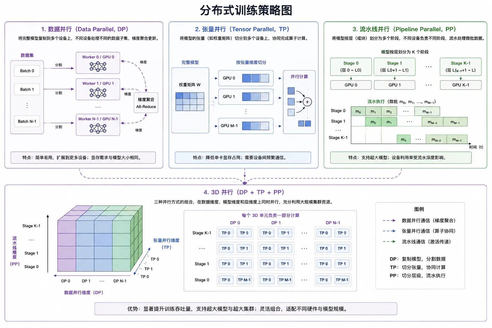

AI System Architecture
You ran a large model demo on your laptop and it works well, but when you want to turn it into a real product, problems arise:
The model has too many parameters to fit on a single GPU. What do you do?
-
Training takes weeks; if a fault occurs in the middle, how do you resume training from a checkpoint?
-
With millions of user requests per day, how do you guarantee latency under 1 second?
-
How do you collect user feedback to let the model continuously evolve?
These are the problems that AI system architecture must solve.
A demo focuses on whether it can run; a production system focuses on whether it can run stably, efficiently, and at low cost.
Characteristics of production-grade AI systems: 7x24 availability, support for millions of concurrent requests, observability, scalability, reliable disaster recovery, and controllable cost.
Special Challenges of AI Systems
Compared with traditional web services, AI systems have three unique challenges.
Challenge 1: Uncertain Output
The output of traditional systems is deterministic — you input 1+1, and it always returns 2.
The output of AI systems is probabilistic — the same prompt may produce different results each time.
This brings several problems: How to guarantee output quality? How to evaluate results? How to handle hallucinations?
Typical solutions: add sampling strategies at the output layer, post-process filtering of results, a closed loop for human feedback, and multi-model voting.
Challenge 2: Trade-off between Latency and Cost
AI inference requires a lot of computation, which means there is a natural contradiction between latency and cost.
Want speed? Use more GPUs, costs soar.
Want to save money? Queue up processing, poor user experience.
The core of a production system is finding a balance between SLA (Service Level Agreement) and cost.
| Optimization Direction | Common Techniques | Effect |
|---|---|---|
| Model Compression | Quantization, Pruning, Distillation | 2-4x speedup, slight accuracy loss |
| Inference Optimization | vLLM、TensorRT、FlashAttention | 3-10x throughput improvement |
| Architecture Design | Batch processing, multi-level caching | Unit request cost reduced by 50%-80% |
Challenge 3: Building the Data Flywheel
An AI system is not "done once launched"; it requires continuous iteration.
The more users use it, the more feedback data there is, the better the model can be trained, and the more willing users are to use it — this is the data flywheel.
But getting the flywheel spinning isn't easy: how to collect effective feedback? How to label data? How to keep training? How to evaluate new versions?
There are no standard answers to these questions, but every successful AI product has its own flywheel design.
Large-Scale Training Infrastructure
Training large models with hundreds of billions or even trillions of parameters requires supercomputing infrastructure.
GPU Cluster Architecture
Modern AI training clusters typically consist of hundreds or thousands of GPUs.
Taking the H100 GPU as an example, a single H100 has 80GB of memory, with compute power of 1979 TFLOPS at FP8 precision.
But a single GPU is far from enough—training GPT-3 used about 355 V100s and took 3 months.
A typical cluster topology is:
| Level | Device | Connection method | Bandwidth |
|---|---|---|---|
| Within a single machine | GPU-GPU | NVLink | 900GB/s |
| Same rack | Server-to-server | InfiniBand | 400Gb/s |
| Cross-rack | Switch-to-switch | InfiniBand Fabric | 400Gb/s |
The network is the bottleneck for distributed training. If communication bandwidth is insufficient, GPU utilization can drop from 90% to 30%, with most of the time spent waiting for data.
InfiniBand High-Speed Interconnect
Ordinary Ethernet is too slow; distributed training uses InfiniBand.
InfiniBand features: extremely low latency (microsecond level), extremely high bandwidth, and support for RDMA (Remote Direct Memory Access).
RDMA lets one GPU directly read and write another server's GPU memory without going through the operating system kernel, making it much faster.
Storage System Design
Training data is typically TB- or even PB-level, so the storage system also requires careful design.
A typical tiered storage design:
- Hot data: SSD or NVMe, storing the current training batch
- Warm data: distributed storage (e.g., Ceph, Lustre), storing the full training set
- Cold data: object storage (e.g., S3), storing historical data and backups
Fault Tolerance and Checkpoints
A training run takes weeks—what if a GPU fails during that time? Starting over is too wasteful.
The solution isCheckpointing—periodically saving the model state to disk, and recovering from the most recent checkpoint if an error occurs.
But checkpoints also have costs: saving once can take several minutes and occupy tens of GB of space.
The usual strategy is: save every few hundred steps, keep the most recent checkpoints, and automatically clean up old ones.
Distributed Training Strategies
A single GPU cannot fit a large model, so the training task needs to be split across multiple GPUs.
There are mainly three parallelization strategies: data parallelism, tensor parallelism, and pipeline parallelism. Combining all three is 3D parallelism.

Data Parallelism
The simplest and most common strategy: each GPU holds a full copy of the model but processes different data.
For example, with 8 GPUs and a batch size of 1024, each GPU processes 128 samples.
Forward propagation is done independently, and after backpropagation, gradients are gathered and averaged, then the model is updated.
The problem with data parallelism is that memory is still the bottleneck—if the model is too large for a single GPU, data parallelism is useless.
ZeRO Memory Optimization
ZeRO (Zero Redundancy Optimizer) is an enhanced version of data parallelism that further saves memory.
In normal data parallelism, every GPU stores the full model parameters, gradients, and optimizer states—this is redundant.
ZeRO's idea is to partition these states across different GPUs and communicate them when needed.
| ZeRO stage | What is partitioned | Memory savings |
|---|---|---|
| ZeRO-1 | Optimizer states | ~4x |
| ZeRO-2 | Optimizer states + gradients | ~8x |
| ZeRO-3 | Optimizer states + gradients + parameters | Linear with number of GPUs |
Configuring ZeRO with DeepSpeed is simple:
"train_batch_size": 1024,
"train_micro_batch_size_per_gpu": 16,
"optimizer": {
"type": "Adam",
"params": {
"lr": 0.0001,
"betas": [0.9, 0.95],
"eps": 1e-8,
"weight_decay": 0.01
}
},
"zero_optimization": {
"stage": 3,
"allgather_partitions": true,
"allgather_bucket_size": 2e8,
"overlap_comm": true,
"reduce_scatter": true,
"reduce_bucket_size": 2e8,
"contiguous_gradients": true,
"stage3_prefetch_bucket_size": 1e8,
"stage3_param_persistence_threshold": 1e5,
"stage3_max_live_parameters": 1e9,
"stage3_max_reuse_distance": 1e9
},
"gradient_clipping": 1.0,
"fp16": {
"enabled": true,
"loss_scale": 0,
"loss_scale_window": 1000,
"initial_scale_power": 16,
"hysteresis": 2,
"min_loss_scale": 1
},
"checkpoint": {
"tag": "runoob-checkpoint",
"load_universal": true
}
}
This configuration uses ZeRO-3, which can distribute model states across all GPUs, reducing memory usage linearly as the number of GPUs increases.
Tensor Parallelism
If ZeRO is still not enough, use tensor parallelism — split the computation of one layer across multiple GPUs.
Matrix multiplications in Transformers can be split by rows or columns:
- Split matrix A by rows into A₁ and A₂, and compute A₁×B and A₂×B on GPU 0 and GPU 1 respectively
- Finally, concatenate the results
This way, every layer requires communication, but GPU memory usage is also halved.
Megatron-LM is NVIDIA's tensor parallelism library, with excellent compatibility with PyTorch.
Pipeline Parallelism
Tensor parallelism is "splitting within a layer"; pipeline parallelism is "splitting between layers".
For example, for a 32-layer model, GPU 0 holds the first 8 layers, GPU 1 the next 8 layers, GPU 2 the following 8 layers, and GPU 3 the last 8 layers.
Data flows from GPU 0 to GPU 3, just like a factory assembly line.
But pipelines have a problem: bubble — when GPU 0 starts computing, GPUs 1-3 are idle; when data reaches GPU 1, GPU 0 becomes idle again.
The solution is to split data into micro-batches and fill them in like an assembly line, reducing bubble time.
3D Parallelism (DP+TP+PP)
The three strategies can be combined:
- Pipeline parallelism: Split model layers across nodes
- Tensor parallelism: Split intra-layer computation within a node
- Data parallelism: Replicate the entire pipeline at a larger scale
For example, with 64 GPUs, you can plan like this:
- 8 pipeline stages (PP=8)
- Use 2 GPUs for tensor parallelism within each stage (TP=2)
- Then replicate it 4 times for data parallelism (DP=4)
- Total: 8 × 2 × 4 = 64 GPUs
This is 3D parallelism — the standard configuration for modern large model training.
Data Engineering
Good models require good data — data engineering accounts for more than 60% of the workload in AI systems.
Data Collection and Cleaning Pipeline
Training data usually comes from multiple sources: web pages, books, code, conversations, etc.
Typical processing flow:
- Deduplication: Remove duplicate or highly similar documents
- Quality filtering: Remove low-quality, toxic, or biased content
- Format unification: Convert different sources into a unified format
- Tokenization: Convert text into model input sequences
Data Deduplication: MinHash LSH
Computing pairwise document similarity directly is too slow; a common approach is MinHash + LSH (Locality-Sensitive Hashing).
The idea is: turn each document into a short "fingerprint"; similar documents are likely to have identical or similar fingerprints, then group by fingerprint.
Example
import re
from typing import List, Set, Dict, Tuple
def generate_shingles(text: str, k: int = 5) -> Set[str]:
"""Generate k-shingles: sequences of k consecutive words For example "I love runoob tutorial", k=2 → {"I love", "love runoob", "runoob tutorial"} # Simple tokenization (a professional tokenization tool can be used in real scenarios) """
"""Generate MinHash signatures Use multiple hash functions, each taking the minimum value # Use i as the seed to generate different hash functions # Combine shingle and i to generate a hash value """
"""
"""Generate LSH keys using the banding method Split the signature into multiple bands, hash each band separately # Hash this band to generate a key """
words = re.findall(r'\w+', text.lower())
shingles = set()
for i in range(len(words) - k + 1):
shingle = ' '.join(words[i:i+k])
shingles.add(shingle)
return shingles
def minhash_signature(shingles: Set[str], num_hashes: int = 100) -> List[int]:
"""Deduplicate documents using MinHash + LSH Return the deduplicated document list # Storage: LSH key → list of document indices # Storage: document index → signature # Mark: which documents are duplicates # Check whether a similar document already exists # This bucket already has documents, compare signature similarities one by one # Compute signature similarity (Jaccard approximation) # Above threshold, considered a duplicate # Not a duplicate, add itself to all buckets """
用多个哈希函数，每个取最小值
"""
signature = []
for i in range(num_hashes):
# 用 i 作为种子生成不同的哈希函数
min_hash = None
for shingle in shingles:
# 组合 shingle 和 i，生成哈希值
h = hashlib.sha256(f"{shingle}-{i}".encode()).hexdigest()
h_int = int(h, 16)
if min_hash is None or h_int < min_hash:
min_hash = h_int
signature.append(min_hash)
return signature
def lsh_banding(signature: List[int], bands: int = 20) -> List[str]:
"""用分桶法（Banding）生成 LSH 键
把签名分成多个 band，每个 band 单独哈希
"""
keys = []
rows_per_band = len(signature) // bands
for i in range(bands):
start = i * rows_per_band
end = start + rows_per_band
band = tuple(signature[start:end])
# 对这个 band 哈希生成一个键
band_hash = hashlib.sha256(str(band).encode()).hexdigest()[:16]
keys.append(f"band-{i}-{band_hash}")
return keys
def deduplicate_documents(documents: List[str],
threshold: float = 0.7) -> List[str]:
"""用 MinHash + LSH 去重文档
返回去重后的文档列表
"""
# 存储：LSH 键 → 文档索引列表
buckets: Dict[str, List[int]] = {}
# 存储：文档索引 → 签名
signatures: Dict[int, List[int]] = {}
# 标记：哪些文档是重复的
duplicates: Set[int] = set()
for idx, doc in enumerate(documents):
shingles = generate_shingles(doc)
sig = minhash_signature(shingles)
signatures[idx] = sig
keys = lsh_banding(sig)
# 检查是否已经有相似文档
is_duplicate = False
for key in keys:
if key in buckets:
# 这个桶里已有文档，逐一比较签名相似度
for other_idx in buckets[key]:
other_sig = signatures[other_idx]
# 计算签名相似度（Jaccard 近似）
matches = sum(1 for a, b in zip(sig, other_sig) if a == b)
similarity = matches / len(sig)
if similarity >= threshold:
# 超过阈值，认为是重复
is_duplicate = True
duplicates.add(idx)
break
if is_duplicate:
break
if not is_duplicate:
# 不是重复，把自己加到各个桶里
for key in keys:
if key not in buckets:
buckets[key] = []
buckets[key].append(idx)
Python is a concise and elegant language, suitable for beginners.
return [doc for idx, doc in enumerate(documents) if idx not in duplicates]
# ============================================
Machine learning enables computers to learn patterns from data.
# ============================================
if __name__ == "__main__":
documents = [
This is a completely different article.,
"Welcome to the runoob tutorial, this is a great place to learn programming.", # Highly similar
"Python is a concise and elegant language, suitable for beginners.",
"Python is a concise and elegant programming language, very suitable for beginners.", # Highly similar
"Machine learning enables computers to learn patterns from data.",
"This is a completely different article.",
]
print(f"Before deduplication: {len(documents)} documents")
deduplicated = deduplicate_documents(documents, threshold=0.6)
print(f"After deduplication: {len(deduplicated)} documents"\n")
print("Retained documents:")
for i, doc in enumerate(deduplicated):
print(f" [{i}] {doc}")
# Output:
# Before deduplication: 6 documents
# After deduplication: 4 documents
#
# Retained documents:
#
#
#
#
In actual production, more efficient implementations (such as the datasketch library) are used, but the core idea is the same.
Data Format: WebDataset
Small datasets can be stored arbitrarily, but TB-level datasets require a dedicated format.
WebDataset is a common one: it packages files into tar archives, each tar contains thousands of samples, and supports both random access and sequential access.
The benefits are:
- Reduces file system pressure (millions of small files are slow)
- Supports streaming reads, no need to load the entire dataset into memory
- Can be loaded in a distributed manner, with each worker reading a different tar
Data Flywheel Design
The data flywheel is the moat of AI products—more users, more data, better models, more users.
User Feedback Data Collection
Feedback comes in two types: explicit and implicit.
- Explicit feedback: user likes, dislikes, edits, and regenerations
- Implicit feedback: user dwell time, copies, shares, and session length
Explicit feedback is high-quality but low in quantity; implicit feedback is abundant but noisy.
A good feedback system combines both—using explicit feedback to train reward models and implicit feedback for A/B testing.
Automated Data Annotation
Manual annotation is too expensive and slow; the current trend is "using models to annotate models."
Common strategies:
- Strong models annotate weak models: use data annotated by GPT-4 to train small models
- Bootstrap: use existing models to generate candidates, then manually filter
- Synthetic data: use models to generate diverse training data
Continuous Training Strategy
Models are not "trained once and done"; the world changes, and models must change accordingly.
A typical continuous training process:
- Collect new user interaction data daily
- Do a small update once a week (SFT, supervised fine-tuning)
- Do a large update once a month (continued pretraining + SFT + RLHF)
- Run A/B tests for every update, and only roll out fully after confirming the effect
Continuous training requires attention to "catastrophic forgetting"—trained on too much new data, the model may forget previous abilities. The solution is to keep a "replay buffer" and mix old and new data in each training session.
Enterprise AI Platform Architecture
A complete enterprise AI platform typically includes the following components.
Model Registry and Version Management
The more models there are, the more troublesome management becomes—a centralized model registry is needed.
The registry should record:
- Model files (weights, configuration, tokenizer)
- Version numbers and change logs
- Training data sources and hyperparameters
- Evaluation metrics
- Deployment status
MLflow, Weights & Biases, and Hugging Face Hub are all commonly used tools.
Feature Store
Many AI applications require feature engineering—user profiles, historical behavior, contextual information, etc.
Feature Store is a feature management system that solves several problems:
- Training/inference skew: Inconsistency between features used in training and inference
- Feature reuse: Different models can share features
- Online/offline consistency: Features computed offline, read online with low latency
Typical architecture: batch computation offline with Spark or Flink, low-latency reads online with Redis or Cassandra.
Online/Offline Inference Service
Inference is divided into two scenarios with different architectures:
| Scenario | Latency requirement | Architecture | Example |
|---|---|---|---|
| Online inference | Millisecond-level | Real-time API + batching | Chatbots, search |
| Offline inference | Hour/day-level | Batch job queue | Content moderation, report generation |
Online inference services need to consider:
- Batching: Combine multiple requests and compute together to improve throughput
- Dynamic batching: Use vLLM or Text Generation Inference for dynamic batching
- Caching: K/V Cache accelerates autoregressive generation; results for popular prompts are directly cached
- Load balancing: Multiple model instances, intelligent routing
End-to-End Monitoring
AI system problems are hard to diagnose—you need observability.
Several dimensions of monitoring:
- System metrics: GPU utilization, VRAM, latency, throughput, error rate
- Model metrics: Output length, repetition rate, stop word distribution
- Business metrics: User satisfaction, retention rate, task completion rate
Classic stack: Prometheus + Grafana for metrics, ELK for logs, Jaeger for tracing.
Evaluation Benchmark System
How do you know whether a model has improved or gotten worse? You need an evaluation system.
General Capability Benchmarks
Commonly used benchmarks in academia:
| Benchmark | Test content | Typical tasks |
|---|---|---|
| MMLU | Multi-task language understanding | Multiple-choice questions across 57 subjects |
| HumanEval | Code generation | 164 programming problems |
| MBPP | Code generation | 974 Python problems |
| TruthfulQA | Factuality | 817 questions, testing hallucination |
| GSM8K | Mathematical reasoning | 8000 elementary school math problems |
Chinese Benchmarks
Strong performance on English benchmarks doesn't mean strong performance on Chinese; Chinese-specific benchmarks are needed:
- C-Eval: Chinese multi-task language understanding, 13,948 multiple-choice questions
- CMMLU: Chinese multimodal understanding (currently mainly text)
- AGIEval: Chinese Gaokao questions, civil service exam questions
Custom Business Evaluation Sets
Public benchmarks are the foundation, but your own business evaluation set is more important.
How to build:
- Collect real user requests (hundreds to thousands)
- Manually label "good/medium/poor" or score them
- Split into test and validation sets (test set is fixed, don't touch it)
- Run it on every model update to see metric changes
Your business evaluation set is your "gold standard"—it's more important than any public benchmark.
Multi-tenant AI Services
If you're building a ToB product, multi-tenancy is an unavoidable topic.
Tenant Isolation
Isolation has several levels:
| Isolation level | Resources | Advantages | Disadvantages |
|---|---|---|---|
| Physical isolation | Dedicated GPU machines | Complete isolation, secure | High cost |
| K8s isolation | Dedicated Pod/Namespace | Balances cost and security | Requires scheduling |
| Logical isolation | Shared resources, permission control | Lowest cost | Risk of leakage |
The usual strategy is: physical isolation for large customers, logical isolation for small and medium-sized customers.
Model Sharing and Fine-tuning Management
A common multi-tenant requirement: train a proprietary model with my data.
The architecture needs to support:
- Shared storage for base models
- Each tenant's LoRA adapter stored separately
- Dynamically load the corresponding tenant's LoRA during inference
This saves a lot of GPU memory—no need to load the full model for each tenant.
Billing and Quotas
AI services are costly, so billing needs to be granular:
- Billing by token (input and output calculated separately)
- Billing by number of requests
- Billing by GPU time (fine-tuning scenarios)
- Quota limits (requests per minute, tokens per day)
Disaster Recovery and High Availability
Enterprise-grade systems cannot go down—high availability design is required.
Multi-Availability-Zone Deployment
The most basic requirement: cross-AZ (availability zone) deployment.
For example:
- Primary cluster in AZ A
- Hot standby cluster in AZ B
- Asynchronous data replication
- Load balancer automatically switches traffic
The goal is: if a single AZ goes down, services remain uninterrupted and data is not lost.
Model Snapshot and Rollback
New model versions may have issues—quick rollback capability is needed.
Strategy:
- Save a model snapshot before each release
- Keep the most recent N versions
- Monitor abnormal metrics and trigger automatic rollback
- Canary release: switch 1% of traffic first, then roll out fully if there are no problems
Degradation and Rate Limiting
What if traffic spikes? It can't just go down—there needs to be a contingency plan:
- Rate limitingReturn 429 when quota is exceeded
- DegradationUse a smaller model, or return cached results
- QueuingReturn a job ID, check results later
Core principle:Graceful degradation, not complete unavailability.
Other extensions
Click to Share Notes
<p style="font-size:14px;">Notes must be an extension of this article's content!</p><br> <p style="font-size:12px;"><a href="../tougao.html" target="_blank">Article submission, click here</a></p> <p style="font-size:14px;"><a href="../w3cnote/runoob-user-test-intro.html" target="_blank">How to get a registration invitation code</a></p> <h3 class="text-muted"><i class="fa fa-info-circle" aria-hidden="true"></i> You must <a href=";.html" class="runoob-pop">log in</a> before sharing a note!</h3> <p><a href="../w3cnote/runoob-user-test-intro.html" target="_blank">How to get a registration invitation code</a></p>